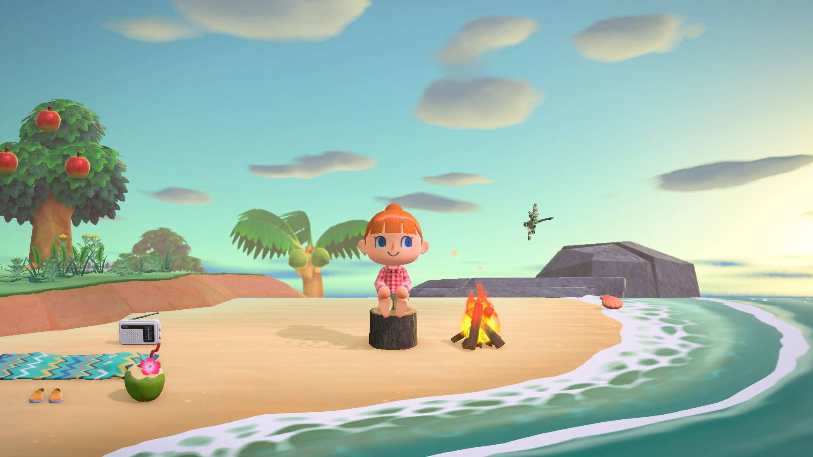
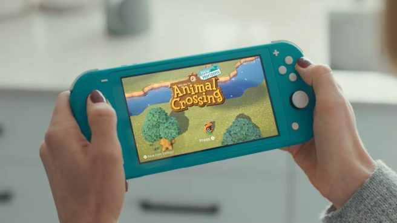
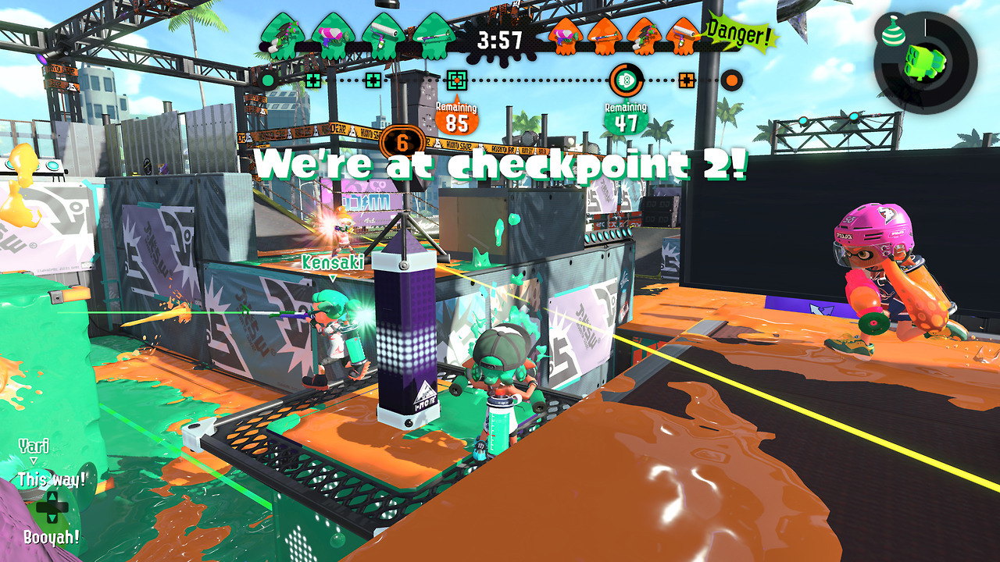
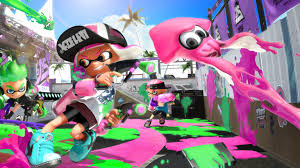
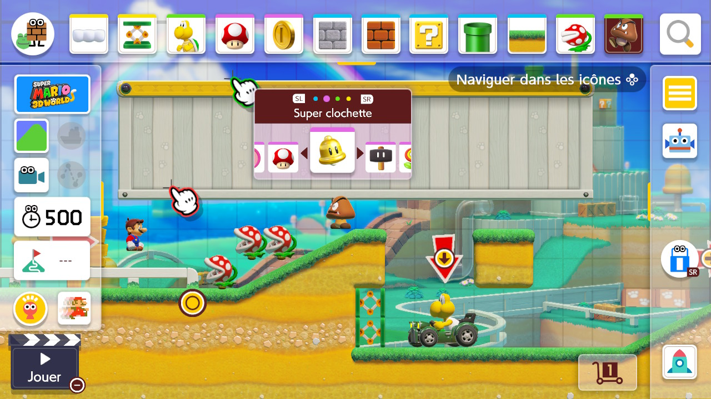
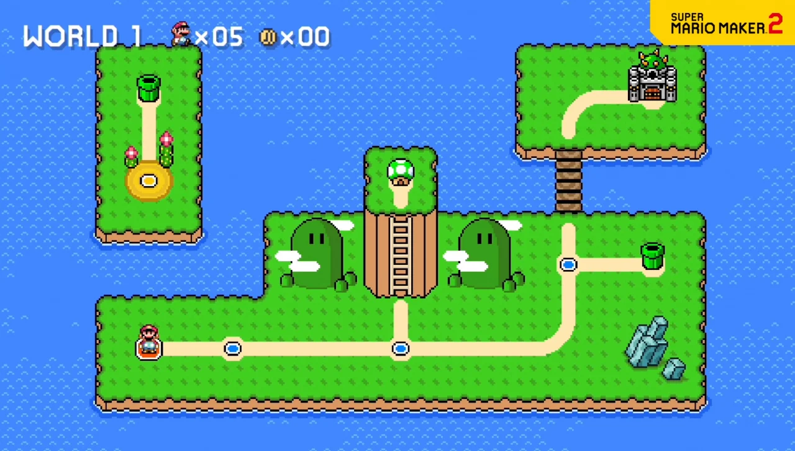

Animal Crossing est une série de jeux vidéo de simulation de vie développée par Nintendo EAD dans laquelle le joueur emménage dans un village habité par des animaux anthropomorphes. Depuis le premier épisode, Animal Crossing, sorti au Japon en 2001 sur Nintendo 64, puis sur GameCube en Amérique et en Europe entre 2002 et 2004, jusqu'au dernier, Animal Crossing: New Horizons, sorti sur Switch en 2020, cinq jeux font partie de la série, auxquels s'ajoutent plusieurs jeux dérivés.
 Splatoon 2 est un jeu vidéo de tir à la troisième personne développé par Nintendo EPD et édité par Nintendo sur Nintendo Switch, sorti le 21 juillet 2017. Tout comme dans le premier opus, le joueur incarne un « Inkling » ou un « Octaling » (une fois l'histoire du DLC Octo Expansion terminée) qu’il peut transformer en humain (notamment pour tirer) ou en calamar pour se déplacer plus rapidement dans l'encre. Celui-ci tire de l'encre avec ses différentes armes et peut nager dans celle-ci en forme de calamar. Le joueur possède aussi une arme secondaire (bombe) et une arme spéciale qui a pour but d’aider l’équipe afin de gagner la partie, ou pour aider le joueur directement.
 Super Mario Maker 2 est un jeu vidéo de plates-formes et un éditeur de niveau développé et édité par Nintendo, sorti le 28 juin 2019 sur Nintendo Switch. Il a été annoncé lors du Nintendo Direct du 13 février 2019. Il fait suite au jeu Super Mario Maker sorti sur Wii U et Nintendo 3DS.
 